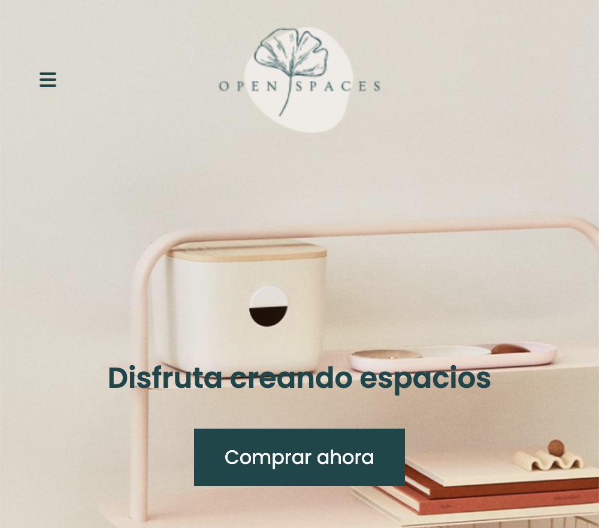
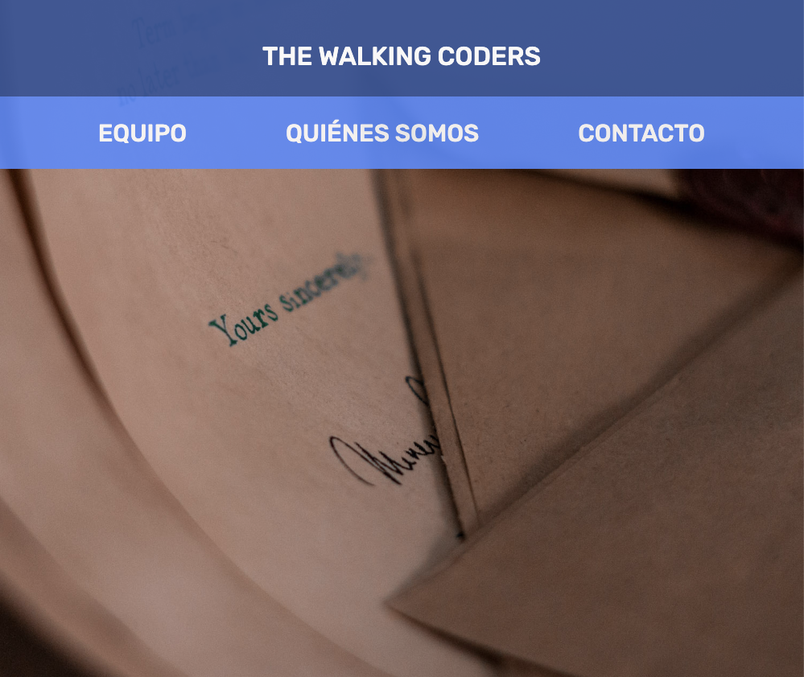
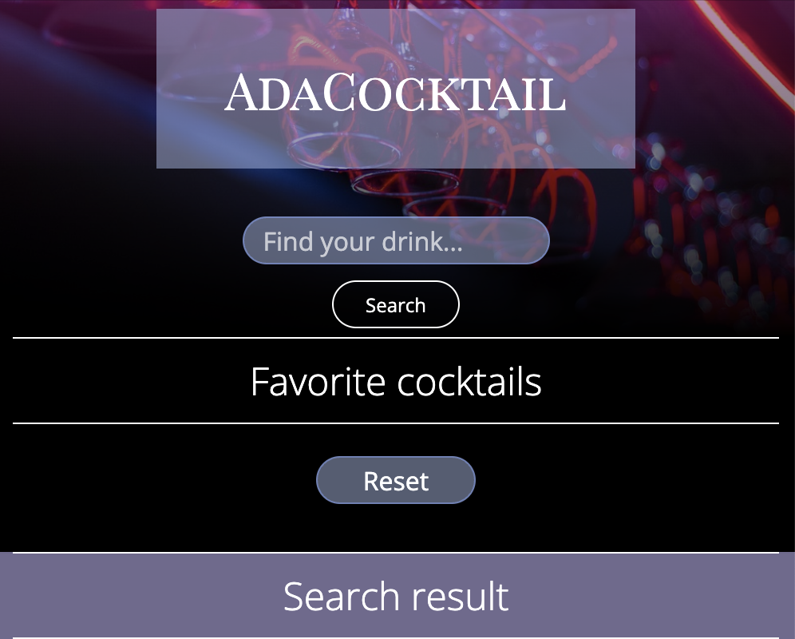
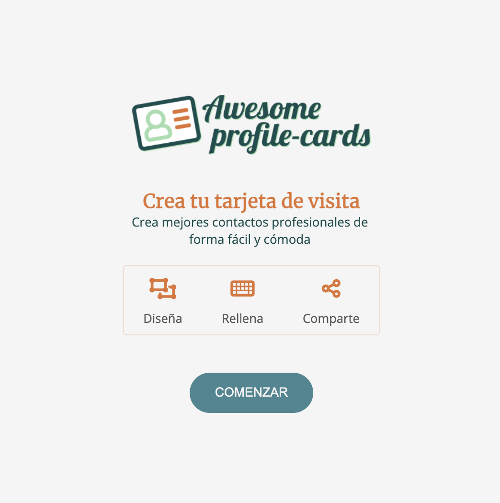
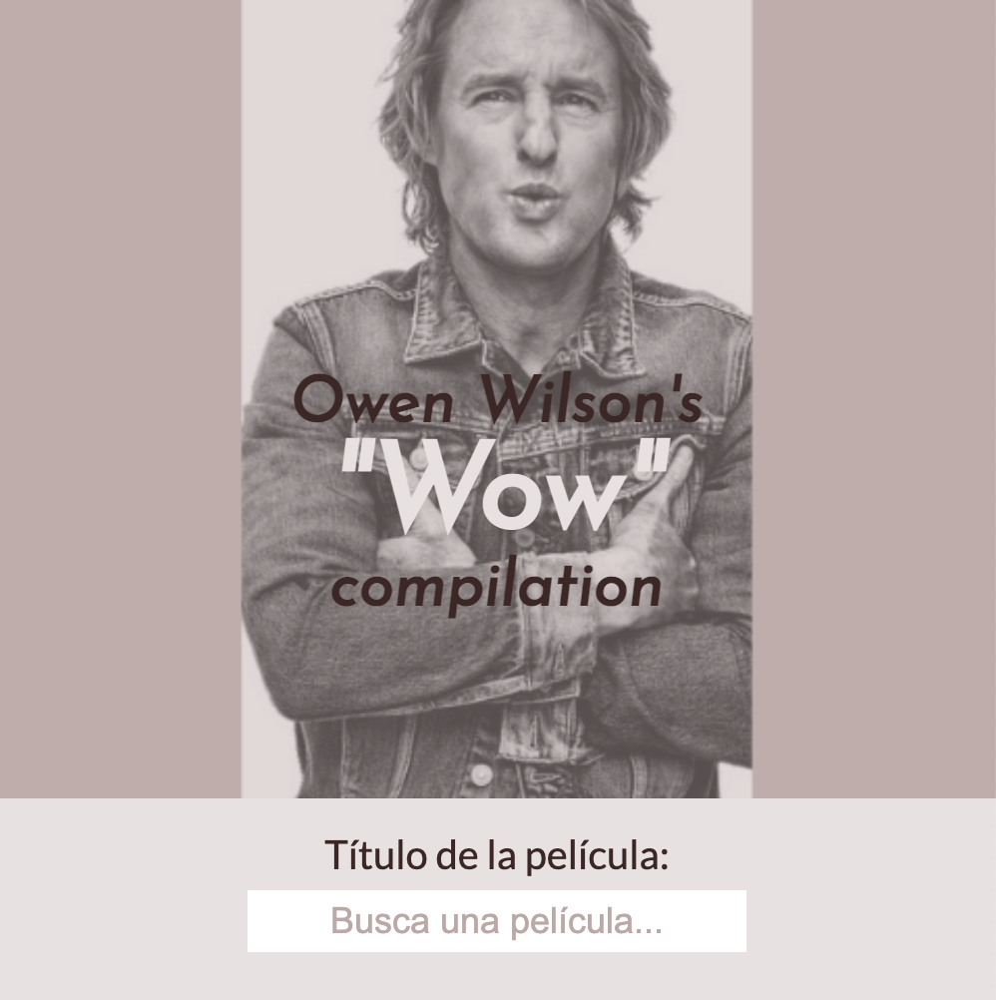
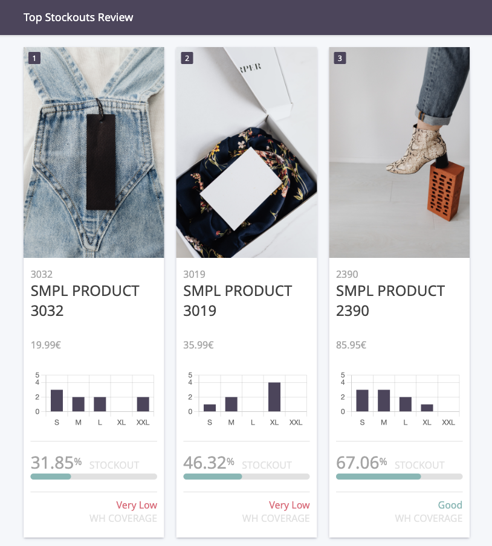
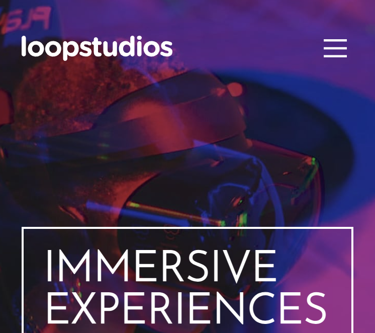

Tania Fernández
Front-End Developer
Sobre mí
Partiendo desde el mundo de la fotografía y habiendo hecho mis pinitos en la animación tradicional, una mezcla entre curiosidad y muchas ganas de mejorar mi futuro laboral han ido acercándome al campo tecnológico, donde creo que mi capacidad de observación y la experiencia en el mundo de la imagen pueden aportar mucho, y en el que espero crecer cada día como programadora.
Proyectos
-

Open Spaces
Proyecto individual
Diseño responsive para tres versiones, realizado con HTML y CSS(SASS).
-

The Walking Coders
Proyecto en grupo
Diseño responsive para tres versiones, realizado con HTML y CSS(SASS).
-

AdaCocktail
Proyecto individual
Aplicación web consistente en un buscador de cócteles que nos permite marcar y desmarcar bebidas como favoritas. Realizado con HTML, CSS y JavaScript. Integración de APIs de terceros.
-

Awesome Profile Cards
Proyecto en grupo
Aplicación web para crear, personalizar y compartir tu tarjeta de contacto. Realizado con HTML, CSS y JavaScript.
-

WoWilson!
Proyecto individual
Página web que incluye un listado de las escenas de las películas donde el actor Owen Wilson ha dicho 'Wow'. Hecho con React y API Wow de Owen Wilson.
-

Stockouts Report
Proyecto individual
Informe de stock de un listado de productos ordenados por ranking de ventas. Permite marcar artículos como completados para retirarlos del informe. Realizado con React.
-

Loopstudios
Proyecto individual
Reto de FrontEnd Mentor: Landing page responsive con menú desplegable en la versión móvil.